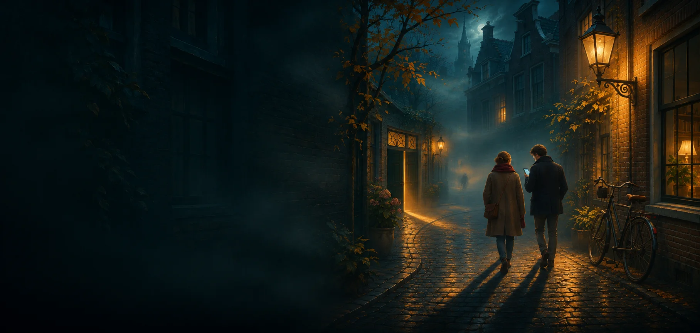
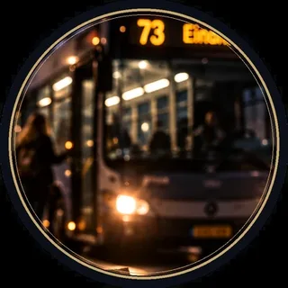
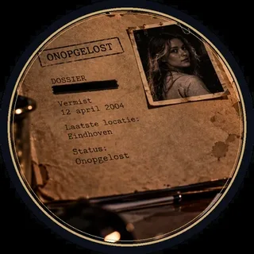
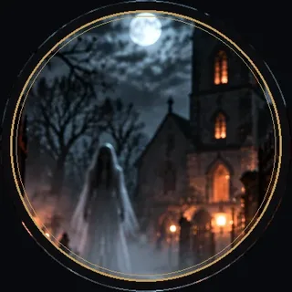

An outing with a murder in it
Out into town with friends, family or colleagues, hunting for a killer. Whenever you like, no booking.
How it works
Looking for an outing that isn't the usual? With a murder walk your own town becomes the crime scene. Together you walk past eight leads, hear witnesses and rule out suspects until one killer is left.
Nothing to book and no guide comes along. You start when it suits you, where it suits you. Every case has a free trial round, so everyone sees how it works first.
A big group? In the Murder Walk, choose teams against each other: every team gets its own leads, and you have to trade to find the killer. For a company outing or party you can also have a case made to measure, with your names and photos.
Pick your case

Murder Walk
Eight leads, five witnesses, one liar.
View the case →The Vanishing
Someone is gone. Abducted, fled, or something else?
View the case →
The Last Bus
Phone says: arrived. Home says: no.
View the case →
Unsolved
A disappearance twenty years ago, never solved.
View the case →
Eyewitness
You saw something you were never meant to see. Someone is walking behind you.
View the case →
Till Death Do Us Part
She was to be married today. The bride never arrived.
View the case →Halloween
Night of the Ghosts
No murderer, but a ghost. Do you dare after dark?
View the case →What does it cost?
The trial round is free. After that a ticket costs € 9.95 per team, and the code stays valid for two months.
How long does it take?
About ninety minutes. You set the pace and can take breaks along the way.
Is it available in English?
Yes. Every case can be played in English and Dutch, handy for international colleagues.
Can a whole department play?
Yes. Split into teams of a few people, each with a phone. For a custom outing you can send a request.
Your own version of a case
Every walk or game can be personalised with your own photos, names and a theme, for € 29.95 including the ticket. Something entirely new, like a route or story of your own? Send a request.